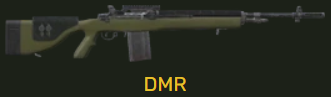
Rifle de precisão
DMR
Rifle semiautomático de alto desempenho para médio/longo alcance.
Munição: .308 WIN
Função: Longo alcance
Capacidade: 20 tiros
Modo: Semiautomático
Catálogo visual baseado nas imagens fornecidas para o projeto e organizado por função. Os nomes próprios e calibres são mantidos como no jogo; disponibilidade e locais de spawn podem variar conforme atualização, mapa e configuração do servidor.

Rifle semiautomático de alto desempenho para médio/longo alcance.
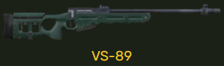
Rifle de precisão de alto impacto e longo alcance.
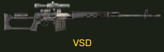
Rifle semiautomático de precisão e alto nível.

Rifle de caça com carregador, indicado para longa distância.

Rifle de caça preciso e confiável.
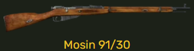
Rifle clássico de grande alcance e alto dano.
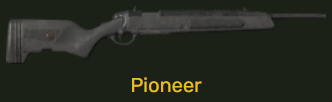
Rifle compacto e preciso para caça e combate.

Rifle compacto de precisão.
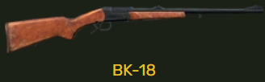
Rifle simples de ferrolho, útil no início da sobrevivência.
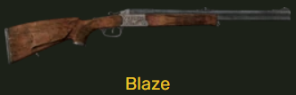
Rifle de caça de dois disparos, com boa precisão.
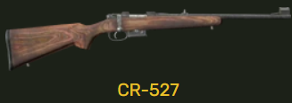
Rifle leve de ferrolho, eficiente para caça e média distância.
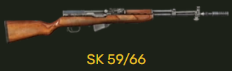
Rifle semiautomático eficiente para média distância.

Fuzil bullpup versátil para combates de média distância.
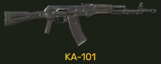
Fuzil de assalto equilibrado para combate de média distância.
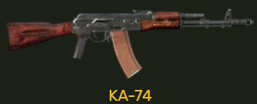
Fuzil de assalto clássico, eficiente e versátil.
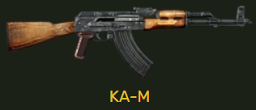
Fuzil de alto poder e recuo, excelente em combate médio.
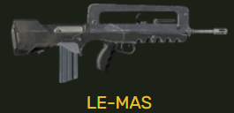
Fuzil bullpup de alta cadência para combates próximos.
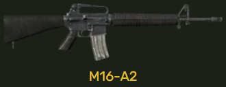
Fuzil versátil para combate de média distância.
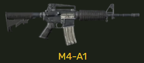
Fuzil modular e versátil para combate de média distância.
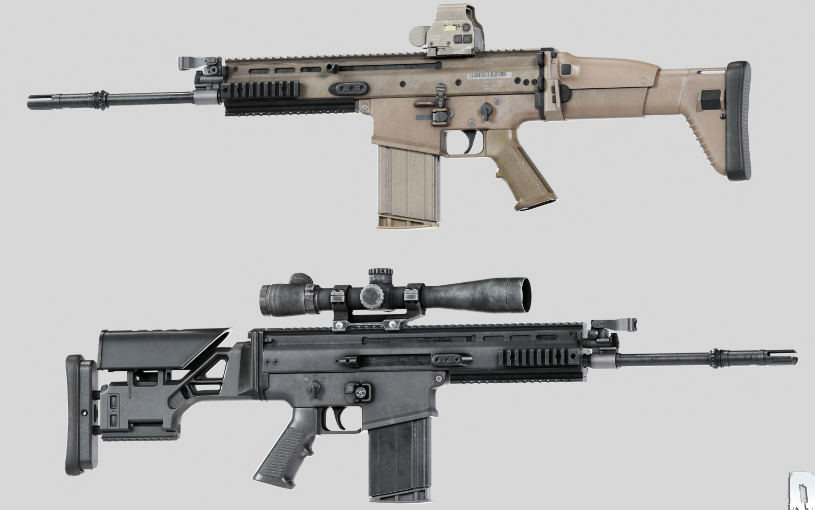
Fuzil moderno de alto nível, associado a conteúdo militar e eventos.
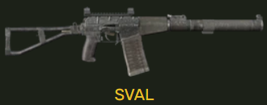
Arma com supressor integrado, voltada ao combate discreto.
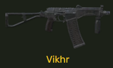
Arma compacta e silenciosa para combate próximo/médio.
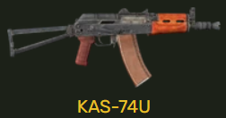
Versão compacta, muito útil em ambientes fechados.
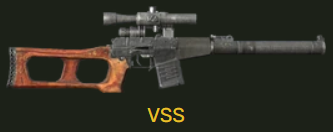
Arma naturalmente silenciosa, forte em curta/média distância.
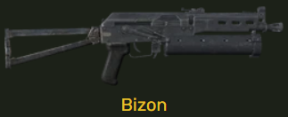
Submetralhadora de alta capacidade, útil em curta distância.

Arma compacta para combate próximo.
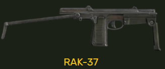
Submetralhadora compacta para combates próximos.
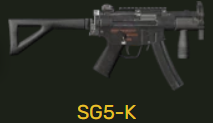
Submetralhadora equilibrada para combate próximo.
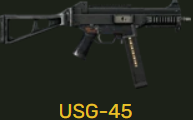
Submetralhadora compacta para curta distância.
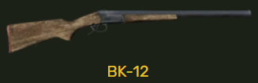
Espingarda de ação simples, adequada para curta distância.
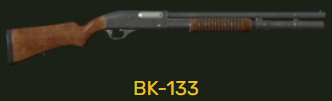
Espingarda de bombeamento versátil para defesa e caça.
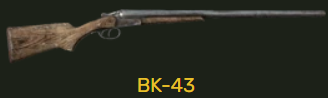
Espingarda de canos duplos, potente em curta distância.
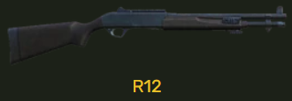
Espingarda semiautomática para curta distância.
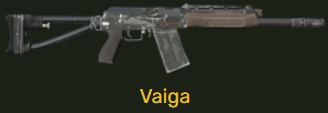
Espingarda semiautomática de alta cadência.
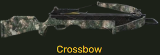
Besta silenciosa, excelente para eliminar alvos sem chamar tanta atenção.
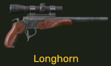
Pistola de tiro único com grande alcance e impacto.

Usada para sinalização e lançamento de sinalizadores.
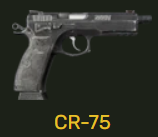
Pistola equilibrada para defesa e backup.
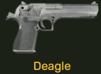
Pistola de alto impacto e grande poder de parada.
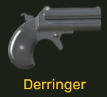
Pistola extremamente compacta para situações de emergência.
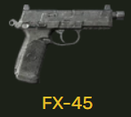
Pistola de médio calibre para curta distância.
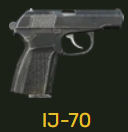
Pistola compacta e comum em equipamentos de início.

Pistola clássica de alto dano para curta distância.

Pistola compacta e silenciosa em comparação com calibres maiores.
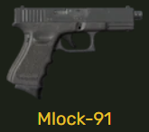
Pistola moderna e equilibrada para curta distância.
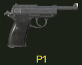
Pistola compacta de uso geral.
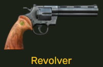
Arma simples e potente para curta distância.

Carabina de alavanca com boa cadência e alcance moderado.
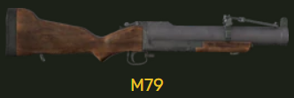
Lançador de granadas de tiro único para munições 40 mm.
Explosivos fazem parte da categoria de armas da Central Loot Economy. Eles podem incluir dispositivos letais e não letais, e sua disponibilidade depende das regras de spawn do mapa e do servidor.
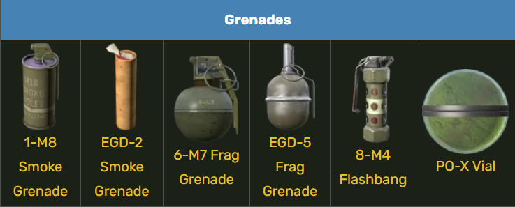
GRANADASIncluem opções de fragmentação, fumaça e outros usos táticos. A imagem reúne exemplos do arsenal fornecido para o projeto.
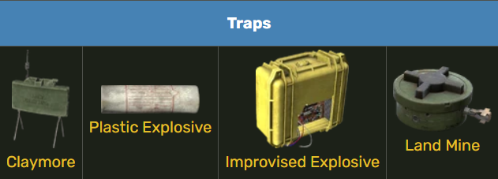
EXPLOSIVOSCategoria geral para dispositivos explosivos. O local de surgimento e a raridade dependem da configuração da economia do servidor.
O M79 utiliza munições 40 mm e amplia as opções de uso de granadas. É tratado separadamente do loot comum de armas leves.
As posições de spawn mudam com a economia do jogo. Para um guia acadêmico, é mais seguro usar o Tier como indicação de progressão e consultar a economia atual antes de afirmar que uma arma aparece em um local específico.